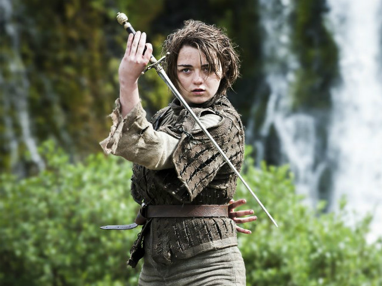

Arya Stark
Name:
Maisie Williams(Arya Stark)
DOB:
15th November 1997
Address:
Bliston,England 
About:
Arya Stark is a fictional character created by American author George R. R. Martin. She is a prominent point of view character in Martin's award-winning A Song of Ice and Fire series, and also a main character in HBO's adaptation of the series, Game of Thrones. She is the only character to have POV chapters in every published book of the series. Williams was born in Bristol, UK. She has always been known as "Maisie" after the character from the comic strip The Perishers. Williams is the youngest of four children; her three older siblings are James, Beth and Ted.Born to Hilary Pitt (now Frances),a former university course administrator, she grew up in Clutton, Somerset. She attended Clutton Primary School and Norton Hill School in Midsomer Norton, before moving to Bath Dance College to study Performing Arts.